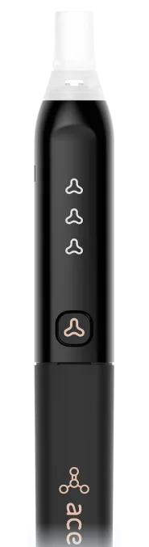
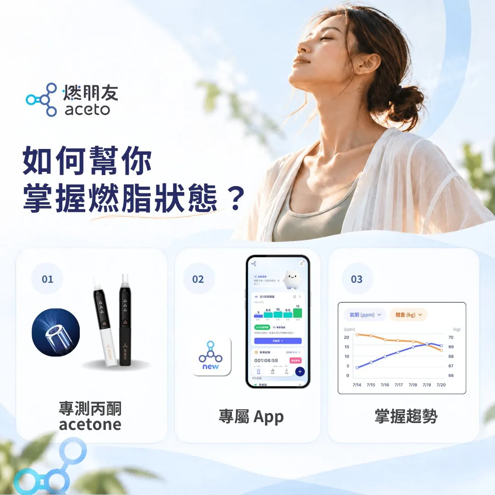
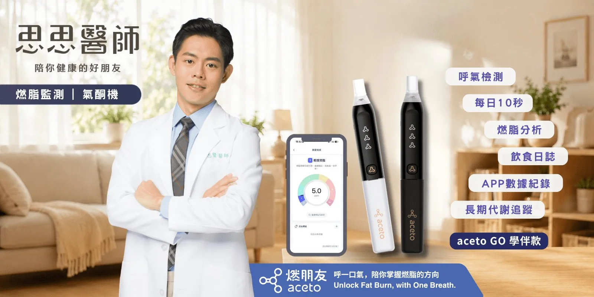

思思推薦 / 駭客優選
Breath Acetone Meter
aceto 燃朋友 氣酮機
呼一口氣，看見自己的燃脂狀態
身體燃燒脂肪的時候會產生酮體，其中的丙酮會從肺部跟著呼氣出來。氣酮機量的就是這個：不用扎針、不用試紙，吹一口氣，就知道身體現在是不是在用脂肪當燃料。
不用扎針不用試紙App 自動記錄一年保固
前往訂購
Premium 代謝追蹤組 NT$6,599
18.0 ppm
Lv 3 加速燃脂
我做鯖魚斷食第一天早上吹出來的數字

Fat-burning Levels
數字怎麼看
氣酮的單位是 ppm。aceto 的 App 把它分成七個等級，吹完直接告訴你現在在哪一級。
Lv 00–2尚未啟動燃脂
Lv 12.5–5輕度燃脂
Lv 25.5–10穩定燃脂
Lv 310.5–20加速燃脂
Lv 420.5–25高速燃脂
Lv 525.5–35穩定高速燃脂
Lv 5+35.5 以上極高速燃脂
單位 ppm，等級區間取自 aceto 官方說明。
每個人的基準都不一樣，沒有必要互相比較。酮體也不是越高越好。很舒服的時候看一下自己的數值，那可能就是最適合你的範圍。
思思醫師
Three Ways to Measure
量酮體的三種方法
驗尿、驗血、驗呼吸，量到的是三種不同的酮體，各有適合的時候。
| 尿酮 | 血酮 | 氣酮 | |
|---|---|---|---|
| 量的是 | 乙醯乙酸 | β-羥基丁酸 | 丙酮 |
| 怎麼量 | 試紙驗尿 | 扎針驗血 | 對著機器呼氣 |
| 耗材 | 試紙，放太久會失準 | 每量一次用一片試紙 | 不用試紙 |
| 適合 | 剛開始低醣、生酮的新手，便宜 | 需要最準確數字的人，是標準做法 | 想常常量、看每一餐反應的人 |
| 限制 | 身體習慣用酮體之後就驗不太到 | 要扎針，頻繁量的花費高 | 機器本身比較貴，相關文獻還不多 |
My Own Numbers
我自己的五天紀錄
今年五月我做了五天鯖魚斷食，每天早上吹氣酮、量體脂。體重前兩天完全沒動，氣酮卻第一天就上去了。
5.5斷食前Lv 2
18.0第 1 天Lv 3
23.0第 2 天Lv 4
20.5第 4 天Lv 4
單位 ppm。這是我個人的數字，每個人的體質和反應不同。
How to Use
三個步驟
裝電池、連上 App
放入 2 顆 AAA 鹼性電池，下載「aceto」App（iOS、Android 都有），打開手機藍牙完成配對。
開機，等它加熱
按電源鍵 1 秒開機。三顆燈一起閃是加熱中，只剩中間那顆在閃，就可以吹了。
吹一口氣
對著吹嘴把氣吐完，App 會顯示 ppm 和燃脂等級，並自動記錄。量完會自己關機。
When to Measure
什麼時候量
起床空腹
官方最建議的時間。可以看出前一天的飲食和夜裡的燃脂狀況。
餐前、餐後
比較同一餐前後的變化，找出哪些食物會讓數字掉下來。
運動後
看這次運動之後，身體的反應是什麼。
睡前
記錄一天結束時的狀態，和隔天早上對照。
The App
不只是量，還幫你記
機器只負責吹氣，其他都在 App 裡。除了氣酮，還能一起記體重、體脂、吃了什麼、斷食多久、喝了多少水，再用圖表把這些放在一起看。
- 氣酮每次測量自動存進去
- 飲食誌記下每一餐，對照氣酮的變化
- 斷食鬧鐘設定進食和禁食的時間
- 喝水紀錄記錄喝水量、設定提醒
- 圖表回頭看一段時間的趨勢

Specifications
規格與保固
| 感測對象 | 呼氣中的丙酮。感測器在日本製造、台灣校正 |
|---|---|
| 精準度 | ±2 ppm（官方數據） |
| 電源 | AAA 鹼性電池 2 顆 |
| 連線 | 藍牙，搭配 aceto App（iOS、Android） |
| 顏色 | 尊爵黑、臻藏白 |
| 保固 | 從 App 啟用註冊那天起一年 |
| 校正 | 累積使用 500 到 1,000 次建議送回原廠校正。保固內、未滿 1,000 次可免費校正一次 |
| 製造商 | 銓勝科技股份有限公司（新竹縣竹北市） |

Order
Premium 代謝追蹤組
NT$6,599NT$7,499
- 尊爵黑、臻藏白兩色可選
- 國內滿千免運（不含外島）
- 可匯款或刷卡，由 aceto 原廠出貨
- 七天鑑賞期，退換貨規定見訂購頁
FAQ
常見問題
數字是不是越高越好？
不是。酮體很高，也可能代表身體做了很多卻用得不好。睡眠、運動、壓力都會影響數字。建議跟自己比，看同一個人在不同飲食、不同作息下的變化。
為什麼我一直吹出 0？
官方列的兩個常見原因：吹氣量不夠，或是最近吃了比較多碳水和含糖食物，身體還沒開始燃脂。也可以用 App 裡的「氣酮機健康診斷」檢查機器。
連續吹兩次，數字不一樣正常嗎？
正常。氣體測量本來就會受環境影響，官方的精準度是 ±2 ppm，差距在這個範圍內都算正常。
我跟家人吃一樣的東西，數字為什麼差很多？
每個人的代謝、荷爾蒙和作息都不一樣，同樣的飲食本來就會有不同的反應。這也是自己量的意義。
沒有控醣也沒有斷食，數字卻一直很高怎麼辦？
先用 App 的「氣酮機健康診斷」確認機器正常。如果機器沒問題、數字仍然持續偏高，官方建議盡快就醫檢查。
喝酒後可以量嗎？
官方說明感測器除了丙酮，也會對高濃度酒精有反應，所以喝酒後量到的數字不能當作燃脂狀態。
吹嘴和機身怎麼清潔？
吹嘴可以拆下來用清水或溫水沖洗，完全晾乾再裝回去。機身用乾布擦就好，不能碰水，也不要用酒精擦。平常放在乾燥通風的地方，遠離酒精、香水這類會揮發的東西。
可以退貨嗎？
有七天鑑賞期。拆封後退貨，原廠會扣除吹嘴、機殼、外包裝等回收費用，約 600 元。詳細規定以訂購頁為準。